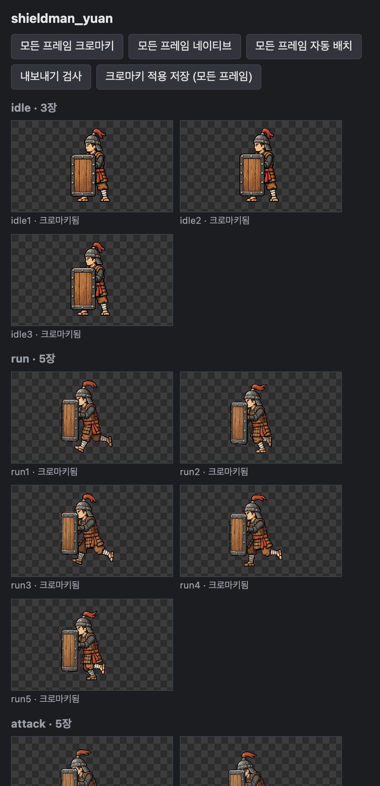
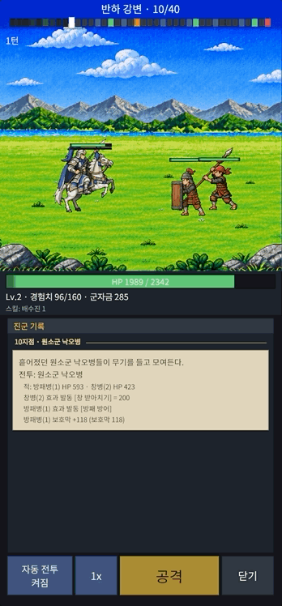

작업 목표
지난 작업에서 조자룡 혼자 여러 적을 상대하는 전투와 원소군 창병을 넣었다. 싸움은 그럴듯해졌지만 적 병사들이 모두 같은 역할이라 부대에 앞과 뒤가 없었다. 이번 목표는 맨 앞에 서서 공격을 받아 내고, 뒤의 병사들이 싸울 시간을 벌어 주는 병과를 만드는 것이었다.
작업 결과
방패병의 행동 규칙을 전투에 넣었고, 방패병 그림을 캐릭터 툴로 정리해 게임에 반입했다.


방패병이 전투에서 하는 일
방패병의 성격은 한 문장이다. 맨 앞에서 대신 맞는다. 앞에서 버티려면 필요한 것을 네 가지 행동으로 풀었다.
맨 앞에 선다
방패병이 있는 전투에서는 방패병이 항상 앞자리에 선다. 조자룡은 살아 있는 적 중 가장 앞의 적을 치므로, 방패병이 가장 먼저 맞는다.
밀려나지 않는다
다른 병사는 맞으면 뒤로 밀려나지만 방패병은 제자리에서 버틴다. 뒤의 병사들도 방패병 앞에서 간격을 두고 멈춘다.
자기 편에서 가장 나중에 행동한다
다른 병사들이 모두 공격을 마친 뒤에 움직인다. 그 턴의 싸움이 끝난 뒤 앞자리를 다시 잡는 역할이기 때문이다.
앞자리를 빼앗기면 방패로 밀어낸다
싸우다 보면 조자룡이 방패병을 지나쳐 뒤의 병사들 곁에 서게 된다. 그러면 방패병이 달려 나와 방패로 조자룡을 밀어내고 다시 맨 앞에 선다. 멈추는 순간 한 번 친다. 앞자리를 지키고 있으면 여느 병사처럼 공격만 한다.
그림은 캐릭터 툴을 거쳐 게임으로
방패병은 앞서 만든 원소군 창병을 참조로 삼아 같은 화풍으로 새로 그렸다. 굵은 외곽선과 균일한 도트, 같은 군대의 붉은색을 유지하면서 머리에는 두건 대신 쇠 투구를 씌워 창병과 구분했다.
기준 그림 한 장부터
Image대기 자세 한 장을 먼저 확정하고, 그 그림을 기준으로 달리기, 공격, 맞는 모습, 쓰러지는 모습 등의 프레임을 이어서 만들었다. 모든 프레임은 단색 배경 위에 그림자 없이 받는다.
캐릭터 툴에서 정리
Tool직접 만든 웹 도구에서 배경색을 투명하게 지우고, 프레임마다 다른 인물 크기를 맞추고, 발 위치를 한 줄로 정렬했다. 클립별로 순서를 정해 재생해 보며 어색한 프레임을 골라냈다.
내보내기와 반입
Unity툴의 내보내기 버튼이 스프라이트 시트와 클립 정보를 함께 만든다. Unity 에디터의 반입 버튼을 누르면 바로 전투 화면에서 확인할 수 있다.
만들면서 알게 된 것
앞에 세우는 것만으로는 부족했다
방패병을 맨 앞에 두어도 싸움이 이어지면 자리가 섞여 앞줄의 의미가 사라졌다. 방패병이 자기 차례에 직접 밀어내 앞자리를 되찾게 하자 「앞을 지키는 병사」로 읽혔다.
간격 하나로 밀기와 공격을 함께
방패로 밀치는 병사라 미는 거리와 공격하는 거리가 같아도 자연스럽다. 값 하나로 두 동작의 간격을 정해 조절할 것을 줄였다.
거리 값은 화면에서 바로 조절
밀리는 거리와 간격은 빌드 없이 에디터의 전투 확인 화면에서 바꿔 볼 수 있게 했다. 숫자를 고치고 같은 전투를 바로 다시 돌려 보며 정했다.
반격은 맞는 모습이 끝난 뒤에
반격하는 병사가 뒤로 물러났다가 다시 달려오는 동작을 없앴다. 맞고 밀리는 반응이 끝난 뒤 그 자리에서 되받아치게 하니 주고받는 흐름이 또렷해졌다.
원하는 전투를 바로 찾는 목록
방패병이 나오는 전투를 확인하려 해도 몇 번째 지점에서 나오는지 알기 어려웠다. 전투 확인 화면에 그 판의 전투 순서를 보여 주는 목록을 추가해 원하는 조합을 바로 열 수 있게 했다.
작업 방식
규칙을 먼저 넣고, 에디터의 전투 확인 화면에서 직접 돌려 본 뒤, 눈에 걸리는 점을 한 번에 몇 가지씩 고치는 순서로 진행했다.
진행 순서
- 방패병의 행동 규칙 구현과 시뮬레이션으로 난이도 변화 확인
- 전투 확인 화면에서 장면별로 직접 확인
- 반격 동작, 밀기 뒤의 타격, 간격, 밀리는 거리 순으로 다듬기
- 방패병 그림 제작과 캐릭터 툴 정리, 게임 반입
단계마다 지킨 것
- 규칙을 바꿀 때마다 기존 스테이지의 클리어율이 크게 움직이지 않는지 확인했다.
- 연출에만 쓰는 값은 전투 결과에 영향을 주지 않는 자리에 두었다.
- 단계가 끝날 때마다 보고서를 새로 남기고 다음 단계의 범위를 정했다.
앞에서 버티는 병사가 생기자 부대가 됐다
방패병 하나가 들어가면서 적 부대에 앞줄과 뒷줄이 생겼다. 플레이어에게는 「저 방패병을 어떻게 넘을 것인가」라는 새 질문이 생겼다.
3줄 요약
- 맨 앞에서 공격을 대신 받아 줄 병사가 필요해 원소군 방패병을 추가했다. 먼저 맞고, 밀려나지 않으며, 자기 편에서 가장 나중에 행동한다.
- 앞자리를 빼앗기면 방패병이 조자룡을 방패로 밀어내 다시 맨 앞에 서고, 멈추는 순간 한 번 친다.
- 그림은 창병을 참조로 새로 그려 캐릭터 툴에서 배경 제거, 크기 맞춤, 위치 조정을 거쳐 게임에 넣었다.
다음 작업
궁병과 검병 그림
Art원소군의 궁병과 검병을 같은 방식으로 만들어 넣는다.
병과별 성격 정리
Design궁병, 기병, 검병에도 한 문장의 성격을 정하고, 그 성격이 서로 물리도록 다듬는다.
실기기 확인
Device새 병과가 들어간 빌드를 Android 기기에서 확인한다.